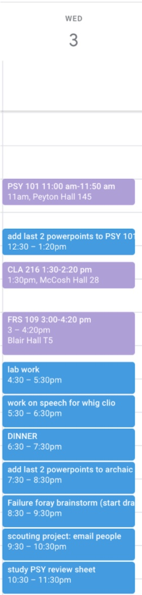

So your 1st Semester isn't going as planned?

I expected this first semester at Princeton to confirm my interest in Neuroscience as a prospective major, but so far it has been anything but. I found myself enjoying my other classes much more than the one class I was supposed to enjoy, given that it is a prerequisite for my major.
This has caused me to doubt myself so much over the entire semester, asking questions like “What am I doing here when I don’t have even the faintest idea of what paths I want to take?” Even though upperclassmen reassure me that I will have plenty of time to explore my interests, it does not help every time I think about the whole situation and start to panic. As the semester ends, I am nowhere nearer to figuring out what I want to do.
However, it has definitely taught me that when something does not go as planned, it is a sign to refocus and redirect. I have come to realise that I have so much time to figure out what I want to do; I don’t have to declare a concentration until Sophomore spring. I am going to take the next few semesters to explore my interests and discover my passions without expectations.
–Audrey Chau ‘25
Am I not smart enough for BSE?
Many students starting in the BSE program find themselves looking to their AB peers and long for their flexibility. However, it often feels like a failure to switch from the “more rigorous” BSE degree to an AB degree. I have dealt with this personally trying to decide between ORFE and Economics. As any of my classmates can tell you, this has not been an easy decision for me to make.
The important note to remember is that regardless of your course of study, it is only as good as it makes you happy and makes you excited to go to your classes. A concentration decides our jobs a whole lot less than it can feel like the first term at university.
Additionally, there is no such thing as an “easy” Princeton degree. We all have our own aptitudes and interests and that’s what makes our campus the unique place that it is.
-Chase Magnano ‘25
How did I fail a midterm? I've only gotten A's my whole life?

I’m sitting across from my Korean professor for my oral midterm and he asks me a question. I know I’ve heard this question before, but my mind has gone blank. I begin to panic as he repeats the question and I realize that I have no idea how to answer him.
So, I take my best guess and answer him hesitantly, not completely sure what I have said in Korean. He stares at me confused. Definitely not the reaction I was hoping for. As I walk out, I realize that he asked me, “Where are you going this afternoon?” And I also realize that I had answered him, “I am a bookstore.”
Midterms are a hectic time. You’re trying to balance regular classes with studying, projects, essays, personal life, and dreaded midterms. You might be hearing from upperclassmen that class averages in the past have been in the forties or thirties. You might be stressing that you can no longer go pre-med because your GPA isn’t a 4.0.
What I found to be most helpful during midterms, was honestly to just be able to say “oh well” sometimes. Recognize when you’ve tried your hardest. Give yourself credit for everything that you’re dealing with. The results may not be what you were hoping for, but I’ve found that beating yourself up over it for an extended period of time only hurts more.
Meeting with your professors, signing up for study groups, and creating a better plan for the next round of finals/midterms are all excellent ways to bounce back from some failed midterms, but what I think is most important is to go easy on yourself. I’m guessing you wouldn’t be this hard on a friend who studied as hard for their midterms and failed as you are being on yourself. While you should probably make a plan on how to recover from these midterms, maybe treat yourself to some Tacoria or a bubble tea while you’re at it. You deserve it.
-Rowan Park '25
Wait this is after the curve? (Princeton Math)
The math department is flawed in several ways and is definitely in need of reform. Since the grading curve is so pronounced, few people study simply because they are genuinely interested in the subject.
Instead, students are under disproportionate pressure to rise above the harsh curve right before every test. Though I am still learning how to thrive in my math class, I have found it helpful to be more active when prepping for tests: beyond utilizing all the resources that are available to me such as psets, office hours, textbooks, previous exams, I also go above and beyond in reading outside of class to better understand the concepts.
Kalu Obasi ‘25
What do you do when you overestimate your abilities"

When I started this project, I thought “I’ve taken most of COS126, I can code whatever I want.” I was very wrong. Shortly after finding a starting place, I realized that this goal was far less achievable than I had anticipated. I spent hours in vain searching for resources that could quickly teach me how to manipulate HTML, JavaScript, and CSS to make a website.
I was faced with two choices: return to my groupmates and let them know we needed to find a new project or reach out to someone. After one of my club meetings, I announced loudly to the whole group pleading for help. Reaching out for help proved to be the single best idea I had during this project. What had been hours of unproductive searches, turned into a quick lesson that helped me implement everything I needed.
It’s very easy to feel overwhelmed with the difficulty and amount of what’s in front of us. However, the best part of going to a school like Princeton is that for everything you don’t know, there are 50 people who are experts. Likely, one will be able to help you.
Reaching out for help can feel like a sign of weakness, but it is an act of strength to make your final product (project, paper, exam) the best possible.
-Chase Magnano ‘25
I literally have no time management skills

You’ve been in a wooden cubicle on floor C of Firestone for the past five hours. That you’re sure of. But could you point to any real work that you got done in that time? If your answer to the previous question is no, then you’ve come to the right place.
I myself have been in your position far too many times. I sit down to work with the highest of expectations–finishing my psychology lab, writing my poetry paper, and perhaps even getting through this week’s readings on Ancient Greece. But alas, buzzing from my phone and a general lack of structure and motivation get in the way. Don’t despair. It is possible to pivot and recover from such a failure.
I have a few tips on time management that worked for me. The first is to map out your week. Sit down, open up a google document or even just the notes app on your phone, and write down all of the assignments that need to be finished this week. Then, put them into your google calendar.
Below is an example of a day in my calendar (in which I plan out class times as well as allotted work time for different assignments).

I have found that having the structure and knowing exactly what needs to get done and when I am going to do it keeps me in check. That being said, don’t be married to the rigid time slots. Have self-compassion. You are human. You aren’t going to get every single assignment done in the exact amount of time that you planned. So be prepared to shift things around and rebound if your schedule goes awry.
Another tip I have is to make sure to take breaks. I cannot emphasize that enough. I promise you that if you try to grind for 3 hours straight with no breathing time, you will be less productive. Every hour or so, take a few minutes to chat with your mom or a friend, grab a snack, or just stretch your legs.
–Alexandra Orbuch ‘25
I hate Writing Sem.

You sit down in your first class and your professor nonchalantly tells you that everything you learned about writing in high school is wrong. You turn in your first draft and your paper comes back to you with comments that make you say to yourself “Wow, I’m a shit writer.” Don’t worry. Almost all of us have been there.
I, for one, found myself so utterly terrified of failing at my first paper that I couldn’t even bring myself to write anything. I would get a single sentence down on the paper and then immediately deleted it because I thought it must sound stupid. Before I knew it, it was just twelve hours before the R1 was due and I had just one paragraph, no thesis, and a whole lot of panic (apologies to my writing sem professor if he ever reads this).
Maybe you’re reading this because you’re in a similar situation, or maybe you’ve already gotten your first paper back and it went horribly. Either way, the best way I’ve found to get through writing seminar is to temporarily throw that fear of failure out of the window as much as possible. Writing seminar is designed to be a place to fail. We’re all coming into Princeton at different writing levels and re-learning how to write. Writing seminar, in a way, is designed to be a space to fail. Also try to remember that everyone is going through the same course, and almost everyone is probably struggling or has struggled just as much as you. You are not alone in any sense in writing seminar. I would recommend using this course as a space to experiment as a writer and push yourself.
–Anonymous
How are there so many great classes and I picked none of them?

As I filled Recal with all my courses for my very first semester at Princeton, I was so certain that NEU 201 was going to be my favorite class. I had this notion that it was an easy course that I would be excited to attend every day.
About two weeks into the class, I realized that my initial ideas about the course were very wrong. NEU 201 was much harder than I ever thought despite my background in AP Psychology and AP Biology. It has been the hardest out of all my classes this semester.
Before I knew it, my first quiz of the year came around and I totally bombed it. Was I disappointed? Yes. But I also realized that the longer I let myself indulge in self-defeating thoughts, the worse the situation would get. I started frequenting my preceptor’s office hours, going over psets more carefully, and adopting new memorization techniques.
Even though I am still dealing with many of the same challenges as the final nears, I can rest assured in the belief that I am taking all the steps that I can to succeed in the future. If I have learned anything this semester, it is that fear of failure can actually be the very thing that causes failure. That is why I do my best not to let fear of failure overwhelm me. My biggest piece of advice would be to not get paralyzed by fear of failure. Definitely give yourself the space you need to process the emotions that come with failure but don’t wallow for too long. Instead, think about how you can rebound from failure.
–Audrey Chau ‘25